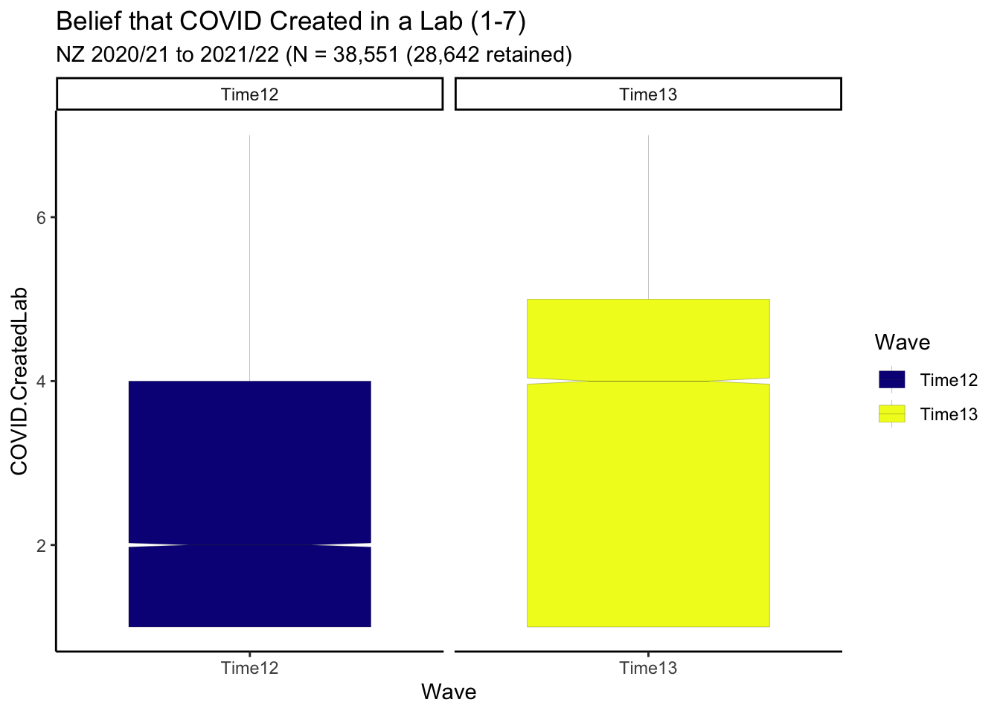
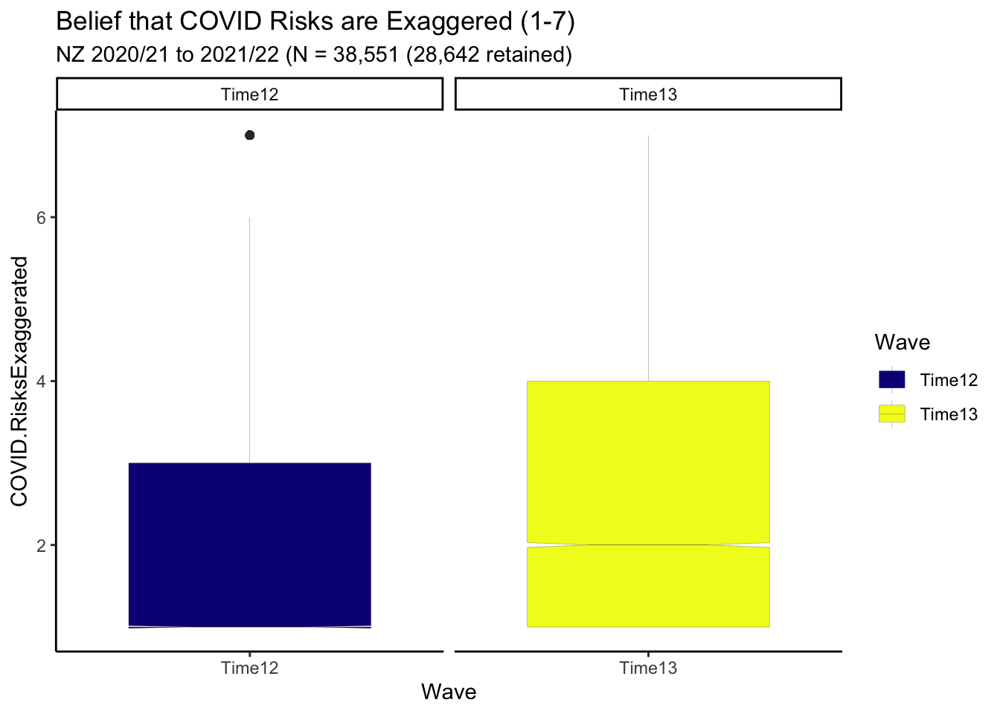
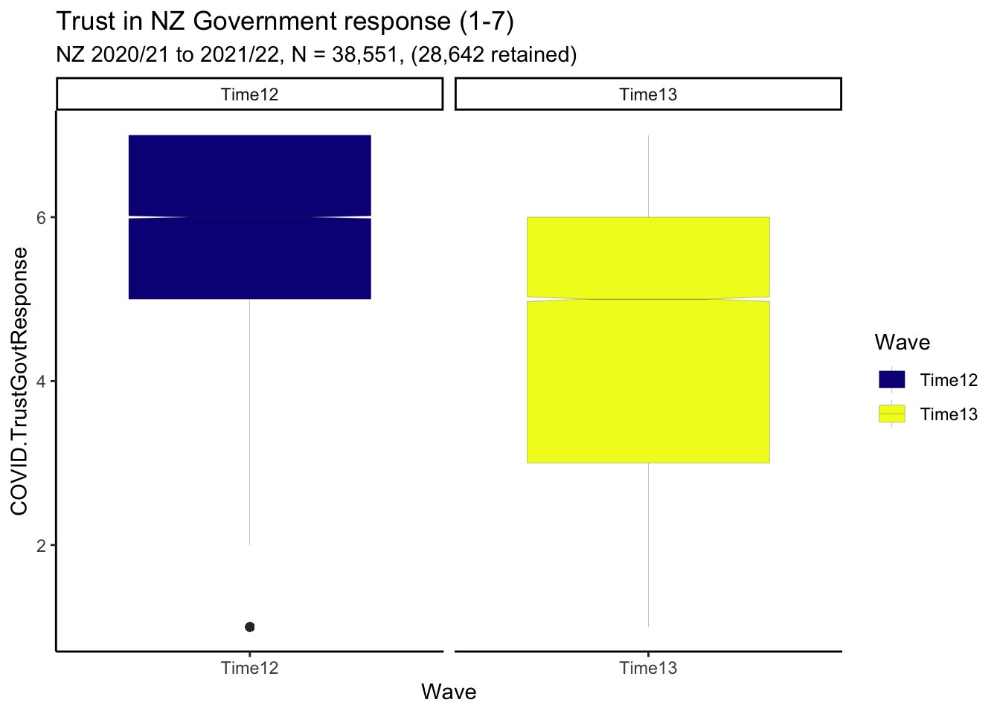
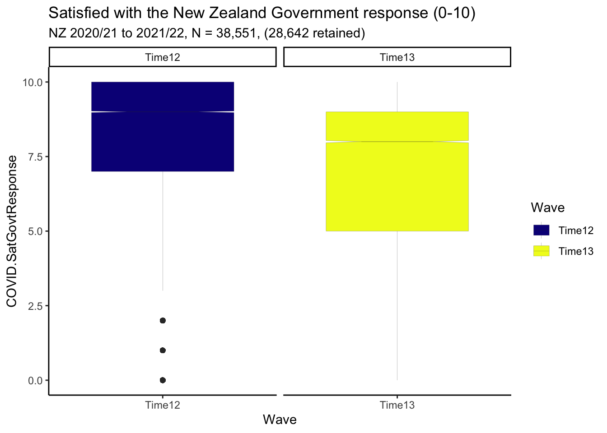
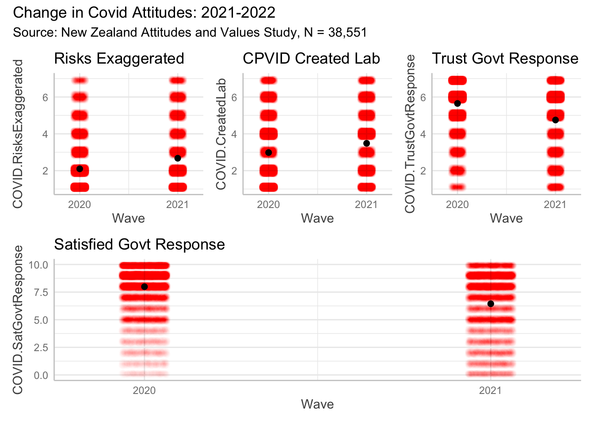
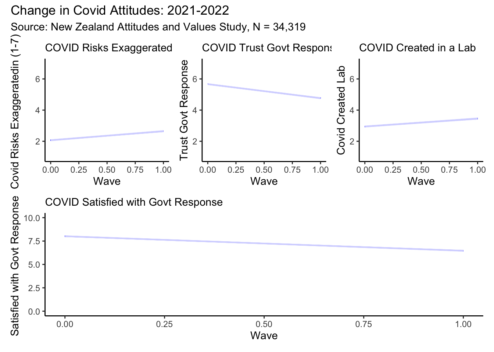

![]()
Summary
- New Zealanders report high levels of trust and satisfaction with the New Zealand Government’s response to COVID-19. However, levels of trust and satisfaction have waned somewhat from 2021 to 2022.1
- Despite relatively low mortality rates, New Zealanders do not generally believe that COVID-19 risks have been exaggerated. However, the perceived exaggeration of COVID-19 risks increased from 2021-2022.2
- There has been an increase in belief that COVID-19 was manufactured in a laboratory.3
- Results remain unchanged in models that impute missing data arising from sample attrition.
Purpose
We investigate changes in attitudes to COVID-19 from the Time 12 to the Time 13 waves of the New Zealand Attitudes and Values Study (NZAVS). The NZAVS is a national probability panel study of attitudes and values in New Zealanders, started by Chris G. Sibley in 2009 (see:NZAVS homepage and link)
There were \(N = 38,551\) participants who responded to the NZAVS at Time 12 and \(n = 28,642\) participants who responded at Time 13.
Covid attitude items repeated in NZAVS Time 12 and Time 13
The NZAVS recorded the following four attitudes to COVID-19 in both Time 12 and Time 13:
Covid risks are exaggerated
- “I think that health risks associated with COVID-19 have been wildly exaggerated.” (1-7)
Covid created in a lab
- “I think it is quite likely that COVID-19 was created in a laboratory.” (1-7)
COVID-19 Trust Government response
- “I trust the Government to make sensible decisions about how to best manage COVID-19 in New Zealand.” (1-7)
COVID-19 Satisfied with Government response
- “The New Zealand government response to COVID-19.” (0-10)
Boxplot indicates decline in both perceived risks of COVID & Satisfaction with Government Response
In 2021, beliefs that COVID=19 was created in a lab were low. Raw response data suggest that tjese beliefs increased from in 2022.

Although beliefs that risks for COVID-19 are low, raw response data suggest these beliefs increased between 2021 and 2022.

Although trust in the NZ government COVID-19 response is high, raw response data suggest trust dropped between 2021 and 2022.

Although Satisfaction with the NZ Government response to COVID-19 is high, raw response data suggest satisfaction dropped between 2021 and 2022.

Model
Next, we formally model change in COVID attitudes using multilevel models.
Results presented in Table 1 and Figure 5 show the magnitudes of change in response across the four indicators of COVID-19 attitudes.
| Parameter | Risks Exaggerated | Created Lab | Trust Govt Response | Sat Govt Response |
|---|---|---|---|---|
| (Intercept) | 2.10 (2.08, 2.12) | 2.98 (2.96, 3.00) | 5.65 (5.63, 5.66) | 7.99 (7.96, 8.01) |
| wave | 0.58 (0.56, 0.59) | 0.50 (0.48, 0.52) | -0.90 (-0.92, -0.89) | -1.54 (-1.57, -1.52) |
| Observations | 64372 | 65048 | 65439 | 66816 |

Findings
These models indicate overall high levels of support for the New Zealand Government Response to COVID 19, that has somewhat waned between NZAVS Time 12 and 13 (October 2020 - October 2022). Notably, these models do not adjust for bias from NZAVS sample attrition.
We next investigate models that adjust for panel attrition by imputing missing responses.
Follow up: Bayesian models impute missing outcomes arising from loss to follow up
Panel studies follow the same people over time. There is typically attrition of any panel over time. Where attrition is related to the outcomes of interest, this can lead to selection bias. That is, responses can be higher or lower because the residual panel systematically differs from initial cohort.
We use Bayesian multilevel models to impute the missing data arising from panel attrition. Our models include a broad range of indicators measured in the baseline year (Time 12) that might affect panel attrition in the following year (Time 13)4. We did not estimate missing predictor values at baseline. These values were excluded. Although exclusion at baseline may result in departure from the population estimate, the time effect estimate is consistent for the population with full response information at baseline. We estimated these models using the brms package in R using the packages default weakly informative priors (Bürkner 2022).

Figure 6 and Table 2 present the results of the Bayesian multilevel imputation models. These agree with the models that do not handle attrition. Conditional on the imputation model, then, we infer there was little bias in estimated average responses arising from panel attrition.
| Parameter | Risks Exaggerated | Created Lab | Trust Govt Response | Sat Govt Response |
|---|---|---|---|---|
| (Intercept) | 2.07 (2.05, 2.08) | 2.94 (2.93, 2.96) | 5.67 (5.65, 5.68) | 8.01 (7.99, 8.04) |
| wave | 0.58 (0.56, 0.60) | 0.51 (0.49, 0.53) | -0.90 (-0.92, -0.88) | -1.55 (-1.58, -1.52) |
| Observations | 68638 | 68638 | 68638 | 68638 |
Bayesian models do change inference
Overall, New Zealanders do not perceive the risks of COVID-19 to be exaggerated. However, there was somewhat greater perception of exaggeration in 2022 compared with 2021. Here, we speculate about the causes of this dicline. COVID-19 only became widespread in New Zealand after the population was vaccinated. During 2022, about two-million New Zealanders reported testing positive for COVID-19 source, of whom 3239 died within 28 days of their positive test. This low death-to-case-positive ratio perhaps motivate the somewhat greater perception of risk-exaggeration in 2022. The causes of change in risk-exaggeration remain unclear. The overall high rate in the perception of risk accuracy implies effective science communication.
In 2022 beliefs that COVID-19 was manufactured in a laboratory increased. At present, there is some scientific disagreement about the origins of COVID-19 (see for example link), even if most evidence points to a natural origin source. Future NZAVS research will investigate whether growing beliefs in a laboratory origin are grounding in confidence in science or tendencies to conspiracy beliefs, or both.
In 2022, New Zealanders continued to express high levels of trust in the New Zealand Government’s response to COVID-19. However, levels of trust declined somewhat from where they were in 2021.
Similarly, in 2022, New Zealanders continued to express high levels of satisfaction with New Zealand Government’s response to COVID-19. However, levels of trust declined somewhat from where they were in 2021.
High trust and satisfaction with the government’s COVID-19 response might be partially explained by New Zealand’s low COVID-19 death rate. Indeed, the low death rate might also explain waning trust and satisfaction. Suffering was averted. That is satisfying. The averted suffering is not directly observable – it was averted. As such, the averted suffering remains intellectual. By contrast, the economic and social fallout of the pandemic was experienced, and continues to be experienced.
Future NZAVS research will systematically investigate the causal basis of trust and satisfaction with the New Zealand Government’s COVID-19 response, which although falling, remains high.5
Appendix A: Descriptive data
Demographic data are presented in ?@tbl-demo. Response data are presented in Table 3.
?(caption)
| Characteristic | Time12, N = 38,5511 | Time13, N = 28,6421 |
|---|---|---|
| Age | 55 (44, 63) | 58 (47, 65) |
| Gender3 | ||
| Female | 24,569 (64%) | 18,313 (64%) |
| GenderDiverse | 165 (0.4%) | 125 (0.4%) |
| Male | 13,817 (36%) | 10,204 (36%) |
| EthnicCats | ||
| Euro | 32,311 (85%) | 24,487 (87%) |
| Maori | 3,374 (8.9%) | 2,346 (8.3%) |
| Pacific | 708 (1.9%) | 373 (1.3%) |
| Asian | 1,443 (3.8%) | 912 (3.2%) |
| Unknown | 715 | 524 |
| BornNZ | 30,248 (79%) | 22,595 (79%) |
| Unknown | 27 | 16 |
| Employed | 29,303 (77%) | 20,899 (74%) |
| Unknown | 287 | 321 |
| Edu | 7.00 (3.00, 8.00) | 7.00 (4.00, 8.00) |
| Unknown | 1,365 | 101 |
| Pol.Orient | ||
| 1 | 2,616 (7.1%) | 1,625 (5.9%) |
| 2 | 8,090 (22%) | 5,849 (21%) |
| 3 | 7,874 (21%) | 5,861 (21%) |
| 4 | 11,054 (30%) | 8,204 (30%) |
| 5 | 4,771 (13%) | 3,893 (14%) |
| 6 | 2,062 (5.6%) | 1,644 (6.0%) |
| 7 | 480 (1.3%) | 331 (1.2%) |
| Unknown | 1,604 | 1,235 |
| SDO | 2.00 (1.33, 2.83) | 2.00 (1.50, 2.83) |
| Unknown | 23 | 26 |
| RWA | 3.17 (2.50, 4.00) | 3.33 (2.50, 4.00) |
| Unknown | 76 | 165 |
| NZSEI13 | 59 (44, 70) | 60 (45, 70) |
| Unknown | 349 | 30 |
| NZDep.2018 | 4.00 (2.00, 7.00) | 4.00 (2.00, 7.00) |
| Unknown | 588 | 828 |
| Religious | ||
| 0 | 25,275 (67%) | 19,462 (68%) |
| 1 | 12,610 (33%) | 9,177 (32%) |
| Unknown | 666 | 3 |
| Partner | 28,267 (75%) | 20,828 (75%) |
| Unknown | 900 | 887 |
| Parent | 28,687 (75%) | 21,385 (75%) |
| Unknown | 80 | 136 |
| CONSCIENTIOUSNESS | 5.25 (4.50, 5.75) | 5.25 (4.50, 6.00) |
| Unknown | 290 | 206 |
| OPENNESS | 5.00 (4.25, 5.75) | 5.00 (4.25, 6.00) |
| Unknown | 291 | 203 |
| HONESTY_HUMILITY | 5.75 (4.75, 6.50) | 6.00 (5.00, 6.67) |
| Unknown | 301 | 199 |
| EXTRAVERSION | 3.75 (3.00, 4.75) | 3.75 (3.00, 4.50) |
| Unknown | 288 | 210 |
| NEUROTICISM | 3.50 (2.75, 4.25) | 3.25 (2.50, 4.25) |
| Unknown | 292 | 208 |
| AGREEABLENESS | 5.50 (4.75, 6.00) | 5.50 (4.75, 6.00) |
| Unknown | 291 | 212 |
| 1 Median (IQR); n (%) | ||
| Characteristic | Time12, N = 38,5511 | Time13, N = 28,6421 |
|---|---|---|
| COVID.RisksExaggerated | ||
| 1 | 19,380 / 37,437 (52%) | 11,281 / 26,935 (42%) |
| 2 | 8,610 / 37,437 (23%) | 5,595 / 26,935 (21%) |
| 3 | 3,062 / 37,437 (8.2%) | 2,422 / 26,935 (9.0%) |
| 4 | 2,406 / 37,437 (6.4%) | 2,001 / 26,935 (7.4%) |
| 5 | 1,806 / 37,437 (4.8%) | 2,072 / 26,935 (7.7%) |
| 6 | 1,159 / 37,437 (3.1%) | 1,850 / 26,935 (6.9%) |
| 7 | 1,014 / 37,437 (2.7%) | 1,714 / 26,935 (6.4%) |
| Unknown | 1,114 | 1,707 |
| COVID.CreatedLab | ||
| 1 | 13,136 / 37,284 (35%) | 7,463 / 27,764 (27%) |
| 2 | 6,280 / 37,284 (17%) | 4,371 / 27,764 (16%) |
| 3 | 2,510 / 37,284 (6.7%) | 2,043 / 27,764 (7.4%) |
| 4 | 6,922 / 37,284 (19%) | 5,456 / 27,764 (20%) |
| 5 | 2,975 / 37,284 (8.0%) | 2,725 / 27,764 (9.8%) |
| 6 | 2,865 / 37,284 (7.7%) | 2,898 / 27,764 (10%) |
| 7 | 2,596 / 37,284 (7.0%) | 2,808 / 27,764 (10%) |
| Unknown | 1,267 | 878 |
| COVID.TrustGovtResponse | ||
| 1 | 1,213 / 38,123 (3.2%) | 2,733 / 27,316 (10%) |
| 2 | 1,379 / 38,123 (3.6%) | 2,240 / 27,316 (8.2%) |
| 3 | 1,760 / 38,123 (4.6%) | 2,179 / 27,316 (8.0%) |
| 4 | 2,357 / 38,123 (6.2%) | 2,346 / 27,316 (8.6%) |
| 5 | 5,182 / 38,123 (14%) | 4,575 / 27,316 (17%) |
| 6 | 12,833 / 38,123 (34%) | 8,060 / 27,316 (30%) |
| 7 | 13,399 / 38,123 (35%) | 5,183 / 27,316 (19%) |
| Unknown | 428 | 1,326 |
| COVID.SatGovtResponse | 7.99 (2.35) | 6.49 (3.08) |
| Unknown | 252 | 125 |
| 1 n / N (%); Mean (SD) | ||
Appendix B: Model equations
Model 1
\[ \begin{aligned} \operatorname{COVID.RisksExaggerated}_{i} &\sim N \left(\alpha_{j[i]} + \beta_{1}(\operatorname{wave}), \sigma^2 \right) \\ \alpha_{j} &\sim N \left(\mu_{\alpha_{j}}, \sigma^2_{\alpha_{j}} \right) \text{, for Id j = 1,} \dots \text{,J} \end{aligned} \]
Model 2
\[ \begin{aligned} \operatorname{COVID.CreatedLab}_{i} &\sim N \left(\alpha_{j[i]} + \beta_{1}(\operatorname{wave}), \sigma^2 \right) \\ \alpha_{j} &\sim N \left(\mu_{\alpha_{j}}, \sigma^2_{\alpha_{j}} \right) \text{, for Id j = 1,} \dots \text{,J} \end{aligned} \]
Model 3
\[ \begin{aligned} \operatorname{COVID.TrustGovtResponse}_{i} &\sim N \left(\alpha_{j[i]} + \beta_{1}(\operatorname{wave}), \sigma^2 \right) \\ \alpha_{j} &\sim N \left(\mu_{\alpha_{j}}, \sigma^2_{\alpha_{j}} \right) \text{, for Id j = 1,} \dots \text{,J} \end{aligned} \]
Model 4
\[ \begin{aligned} \operatorname{COVID.SatGovtResponse}_{i} &\sim N \left(\alpha_{j[i]} + \beta_{1}(\operatorname{wave}), \sigma^2 \right) \\ \alpha_{j} &\sim N \left(\mu_{\alpha_{j}}, \sigma^2_{\alpha_{j}} \right) \text{, for Id j = 1,} \dots \text{,J} \end{aligned} \]
Appendix D: Vacitiation attitudes in the Time 13 sample
In Time 13, the NZAVS included four new items to to measure COVID-19 Vaccination attitudes. These are:
Vaccination Safe
“It is safe for adults to get vaccinated for COVID-19 using the Pfizer vaccine (Pfizer is the vaccine used in New Zealand’s COVID-19 vaccine rollout).”
Vaccinated
“Have you been vaccinated for COVID-19?”
Vaccinated Intend
“If not, do you intend to get vaccinated for COVID-19?”
Reason for Vaccinated Refusal
“If you are not, and do not intend to get, vaccinated for COVID-19, why not?”
Figure 8 presents descriptive summaries of responses.
| Characteristic | N = 28,6421 |
|---|---|
| COVID.Vaccinated | |
| 0 | 1,395 / 28,083 (5.0%) |
| 1 | 26,688 / 28,083 (95%) |
| Unknown | 559 |
| COVID.VaccinatedIntend | |
| 0 | 1,576 / 1,678 (94%) |
| 1 | 102 / 1,678 (6.1%) |
| Unknown | 26,964 |
| COVID.VaccinationSafe | |
| 1 | 1,058 / 27,199 (3.9%) |
| 2 | 566 / 27,199 (2.1%) |
| 3 | 551 / 27,199 (2.0%) |
| 4 | 1,657 / 27,199 (6.1%) |
| 5 | 1,927 / 27,199 (7.1%) |
| 6 | 6,595 / 27,199 (24%) |
| 7 | 14,845 / 27,199 (55%) |
| Unknown | 1,443 |
| 1 n / N (%) | |
We note that the vaccination intent question contains measurement error. Among the 26688 participants who indicated that they had been vaccinated, 283 (1%) indicated that they did not intend to be vaccinated.
It is therefore more informative to focus on those 1395 participants who were not vaccinated. Of these, 102 indended to be vaccinated. Thus, 7.3% of participants who reported they were not vaccinated intended to be vaccinated.
| COVID.Vaccinated | Total | |||
|---|---|---|---|---|
| 0 | 1 | Unknown | ||
| COVID.VaccinatedIntend | ||||
| 0 | 1,293 (93%) | 283 (1.1%) | 0 (0%) | 1,576 (5.5%) |
| 1 | 102 (7.3%) | 0 (0%) | 0 (0%) | 102 (0.4%) |
| Unknown | 0 (0%) | 26,405 (99%) | 559 (100%) | 26,964 (94%) |
Appendix E: Acknowledgments
We are grateful to the maintainers of the following packages, which we use in our work.
We are grateful for Templeton Religion Trust Grant: 0418 for supporting this work.7
R version 4.2.0 (2022-04-22)
Platform: aarch64-apple-darwin20 (64-bit)
Running under: macOS Monterey 12.4
Matrix products: default
BLAS: /Library/Frameworks/R.framework/Versions/4.2-arm64/Resources/lib/libRblas.0.dylib
LAPACK: /Library/Frameworks/R.framework/Versions/4.2-arm64/Resources/lib/libRlapack.dylib
locale:
[1] en_US.UTF-8/en_US.UTF-8/en_US.UTF-8/C/en_US.UTF-8/en_US.UTF-8
attached base packages:
[1] splines stats graphics grDevices datasets utils methods
[8] base
other attached packages:
[1] gtsummary_1.6.2.9004 equatiomatic_0.3.1 CMAverse_0.1.0
[4] gt_0.7.0 report_0.5.5 ggeffects_1.1.4
[7] katex_1.4.0 patchwork_1.1.2 lubridate_1.8.0
[10] parameters_0.19.0 kableExtra_1.3.4 table1_1.4.2
[13] ggokabeito_0.1.0 brms_2.18.0 geepack_1.3.9
[16] cmdstanr_0.5.3 rstan_2.21.7 StanHeaders_2.21.0-7
[19] lme4_1.1-31 Matrix_1.5-1 ggpubr_0.4.0
[22] formula.tools_1.7.1 gghighlight_0.4.0 marginaleffects_0.7.1
[25] skimr_2.1.4 naniar_0.6.1 conflicted_1.1.0
[28] Amelia_1.8.0 Rcpp_1.0.9 miceadds_3.15-21
[31] mice_3.14.0 stdReg_3.4.1 here_1.0.1
[34] janitor_2.1.0 devtools_2.4.5 usethis_2.1.6
[37] remotes_2.4.2 forcats_0.5.2 stringr_1.4.1
[40] dplyr_1.0.10 purrr_0.3.5 readr_2.1.3
[43] tidyr_1.2.1 tibble_3.1.8 ggplot2_3.4.0
[46] tidyverse_1.3.2
loaded via a namespace (and not attached):
[1] estimability_1.4.1 metadat_1.2-0 msm_1.6.9
[4] coda_0.19-4 visdat_0.5.3 knitr_1.40
[7] dygraphs_1.1.1.6 multcomp_1.4-20 data.table_1.14.4
[10] inline_0.3.19 generics_0.1.3 callr_3.7.2
[13] TH.data_1.1-1 future_1.29.0 commonmark_1.8.1
[16] EValue_4.1.3 tzdb_0.3.0 webshot_0.5.4
[19] xml2_1.3.3 httpuv_1.6.6 assertthat_0.2.1
[22] gargle_1.2.1 xfun_0.34 hms_1.1.2
[25] bayesplot_1.9.0 evaluate_0.18 promises_1.2.0.1
[28] fansi_1.0.3 dbplyr_2.2.1 readxl_1.4.1
[31] igraph_1.3.5 DBI_1.1.3 htmlwidgets_1.5.4
[34] tensorA_0.36.2 googledrive_2.0.0 stats4_4.2.0
[37] ellipsis_0.3.2 crosstalk_1.2.0 backports_1.4.1
[40] V8_4.2.1 survey_4.1-1 insight_0.18.6
[43] markdown_1.3 RcppParallel_5.1.5 vctrs_0.5.0
[46] sjlabelled_1.2.0 abind_1.4-5 cachem_1.0.6
[49] withr_2.5.0 drgee_1.1.10 checkmate_2.1.0
[52] emmeans_1.8.2 xts_0.12.2 prettyunits_1.1.1
[55] svglite_2.1.0 crayon_1.5.2 labeling_0.4.2
[58] SuppDists_1.1-9.7 pkgconfig_2.0.3 nlme_3.1-158
[61] pkgload_1.3.1 nnet_7.3-18 globals_0.16.1
[64] rlang_1.0.6 lifecycle_1.0.3 miniUI_0.1.1.1
[67] nleqslv_3.3.3 colourpicker_1.2.0 sandwich_3.0-2
[70] mathjaxr_1.6-0 modelr_0.1.9 cellranger_1.1.0
[73] distributional_0.3.1 rprojroot_2.0.3 matrixStats_0.62.0
[76] datawizard_0.6.3 loo_2.5.1 carData_3.0-5
[79] boot_1.3-28 zoo_1.8-11 reprex_2.0.2
[82] base64enc_0.1-3 gamm4_0.2-6 ggridges_0.5.4
[85] processx_3.8.0 googlesheets4_1.0.1 viridisLite_0.4.1
[88] parallelly_1.32.1 shinystan_2.6.0 rstatix_0.7.0
[91] ggsignif_0.6.4 scales_1.2.1 memoise_2.0.1
[94] magrittr_2.0.3 plyr_1.8.7 threejs_0.3.3
[97] compiler_4.2.0 rstantools_2.2.0 snakecase_0.11.0
[100] cli_3.4.1 urlchecker_1.0.1 listenv_0.8.0
[103] ps_1.7.2 Brobdingnag_1.2-9 Formula_1.2-4
[106] MASS_7.3-58.1 mgcv_1.8-40 tidyselect_1.2.0
[109] stringi_1.7.8 projpred_2.2.1 mitools_2.4
[112] yaml_2.3.6 bridgesampling_1.1-2 grid_4.2.0
[115] sass_0.4.2 ggdag_0.2.7 tools_4.2.0
[118] parallel_4.2.0 rstudioapi_0.14 foreign_0.8-83
[121] medflex_0.6-7 gridExtra_2.3 posterior_1.3.1
[124] farver_2.1.1 digest_0.6.30 simex_1.8
[127] shiny_1.7.3 operator.tools_1.6.3 metafor_3.8-1
[130] car_3.1-1 broom_1.0.1 later_1.3.0
[133] httr_1.4.4 MetaUtility_2.1.2 colorspace_2.0-3
[136] rvest_1.0.3 fs_1.5.2 expm_0.999-6
[139] renv_0.16.0 shinythemes_1.2.0 sessioninfo_1.2.2
[142] systemfonts_1.0.4 xtable_1.8-4 jsonlite_1.8.3
[145] nloptr_2.0.3 tidygraph_1.2.2 R6_2.5.1
[148] broom.mixed_0.2.9.4 profvis_0.3.7 pillar_1.8.1
[151] htmltools_0.5.3 mime_0.12 glue_1.6.2
[154] fastmap_1.1.0 minqa_1.2.5 DT_0.26
[157] codetools_0.2-18 furrr_0.3.1 pkgbuild_1.3.1
[160] mvtnorm_1.1-3 utf8_1.2.2 lattice_0.20-45
[163] numDeriv_2016.8-1.1 curl_4.3.3 gtools_3.9.3
[166] shinyjs_2.1.0 survival_3.4-0 rmarkdown_2.17
[169] repr_1.1.4 munsell_0.5.0 broom.helpers_1.9.0
[172] haven_2.5.1 reshape2_1.4.4 gtable_0.3.1
[175] bayestestR_0.13.0 References
Footnotes
We make no judgment about the New Zealand Government response to COVID-19.↩︎
We make no judgment about the communication of risks from COVID-19.↩︎
We make no judgment about the origins of COVID-19.↩︎
These indicators are personality, age, gender-identification, ethnicity, employment, education, political orientation, social dominance orientation, right-wing authoritarianism, NZSEI employment status, Religious identification, parental status, partner status, urban residence.↩︎
For an explanation of why three-waves are required for causal inference see other research posted on https://go-bayes.github.io/b-causal/↩︎
We exclude the satisfaction with government response item because it is measured on an ordinal scale 0-10, whereas all other items are measured on an ordinal scale 1-7. Recall the satisfaction with government reponses are presented in Figure 4.↩︎
The funders played no role in the design or interpretation of this research.↩︎
Reuse
Citation
@online{bulbulia2022,
author = {Joseph Bulbulia and Chris G Sibley},
title = {Changes in {Perceived} {Risks} and {Government} {Attitudes}
to {COVID-19} in {New} {Zealand:} Years 2021 - 2022},
date = {2022-11-18},
url = {https://go-bayes.github.io/b-causal/},
langid = {en}
}